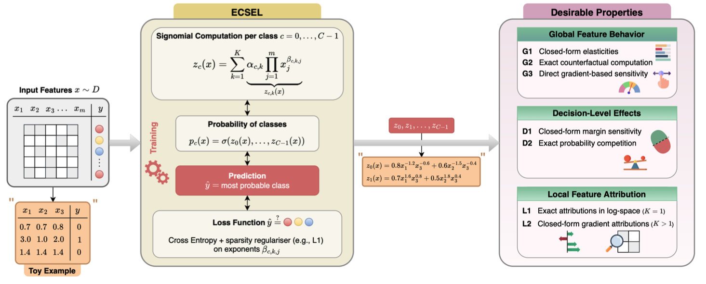
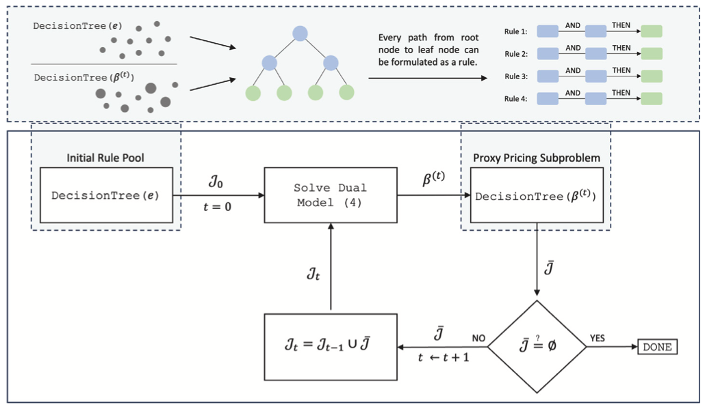

Research
Publications and ongoing work in interpretable machine learning.
Publications

ECSEL: Explainable Classification via Signomial Equation Learning To appear
International Conference on Machine Learning (ICML), 2026 · Seoul · will also present at WiML Symposium, ICML 2026
Abstract
We introduce ECSEL, an explainable classification method that learns formal expressions in the form of signomial equations, motivated by the observation that many symbolic regression benchmarks admit compact signomial structure. ECSEL directly constructs a structural, closed-form expression that serves as both a classifier and an explanation. On standard symbolic regression benchmarks, our method recovers a larger fraction of target equations than competing state-of-the-art approaches while requiring substantially less computation. Leveraging this efficiency, ECSEL achieves classification accuracy competitive with established machine learning models without sacrificing interpretability. Further, we show that ECSEL satisfies some desirable properties regarding global feature behavior, decision-boundary analysis, and local feature attributions. Experiments on benchmark datasets and two real-world case studies, e-commerce and fraud detection, demonstrate that the learned equations expose dataset biases, support counterfactual reasoning, and yield actionable insights.
Keywords: Explainability · Signomial · Classification · Equation Learning · Symbolic AI

Rule Generation for Classification: Scalability, Interpretability, and Fairness
Computers & Operations Research, Volume 183, 2025, 107163
Abstract
We introduce a new rule-based optimization method for classification with constraints. The proposed method leverages column generation for linear programming, and hence, is scalable to large datasets. The resulting pricing subproblem is shown to be NP-Hard. We recourse to a decision tree-based heuristic and solve a proxy pricing subproblem for acceleration. The method returns a set of rules along with their optimal weights indicating the importance of each rule for learning. We address interpretability and fairness by assigning cost coefficients to the rules and introducing additional constraints. In particular, we focus on local interpretability and generalize a separation criterion in fairness to multiple sensitive attributes and classes. We test the performance of the proposed methodology on a collection of datasets and present a case study to elaborate on its different aspects. The proposed rule-based learning method exhibits a good compromise between local interpretability and fairness on the one side, and accuracy on the other side.
This paper extends my MSc thesis in Econometrics. The methodology was developed as part of that thesis work. The method has since been made into a Python package, ruleopt, by S. Çopur.
Keywords: Machine Learning · Linear Programming · Rule Generation · Interpretability · Fairness